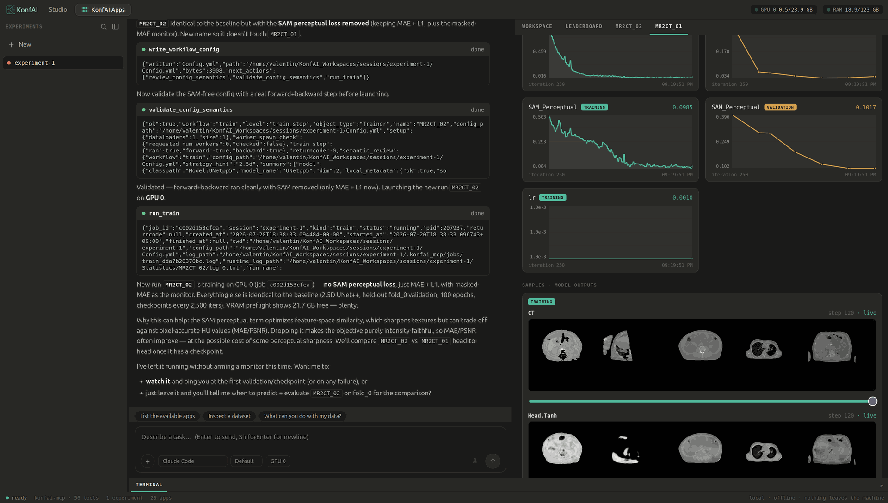

Train·Prediction·Evaluation·Transform
Medical-imaging workflows, executable end to end
KonfAI is a declarative medical-imaging execution engine. One configuration model connects storage, transforms, model graphs, losses, training, prediction, evaluation and output geometry. The resolved YAML is the experiment record: inspectable, diffable, and runnable by a researcher or a program.
One engine, one contractThe same resolved config trains, predicts, evaluates, and ships as an app an agent or a browser can run.
KonfAI
Patch-native training, complete medical-image inference and a reusable application from one configuration, without giving up the PyTorch and MONAI components you already trust.
Get started → AppsKonfAI Apps
Five published bundles: TotalSegmentator-KonfAI, MRSegmentator-KonfAI, ImpactSynth, ImpactSeg and IMPACT-Reg. One contract, from a local folder, a Hugging Face repository or an HTTP server; from a one-line CLI, konfai-apps or 3D Slicer.
See the apps → InspectionKonfAI Scout
Looks at a segmentation, a registration or a synthesis the way a person would at a viewer, and reports where it is wrong, with the views that show it and KonfAI Eval's measurements.
How it reads a result → StudioKonfAI Studio
A chat web UI over the MCP server. Point it at a dataset and, from the conversation, inspect, train, predict, evaluate, compare and look at the volumes. Your own model endpoint, no API key required.

Open Studio → AgentsKonfAI MCP
Fifty tools, one per object. An agent inspects a dataset, writes and validates a config, launches and follows runs, compares them and packages the result, from Claude Code, Codex or any MCP client.
The fifty tools → coming to this siteEdgeKonfAI Edge
The Rust runtime that runs KonfAI apps in a browser tab, with no server: inference, evaluation and uncertainty beside one viewer, as Web Components another page embeds with one import.
What it is → BenchmarkFidOpt
One open benchmark for biomedical image registration, segmentation and synthesis, every method scored on the same test cases under the same rules. KonfAI MCP reads its catalogue and boards and launches its runs.
fidopt.io ↗How it worksOne config, one command per workflow, one app at the end.
A YAML per workflow
Config.yml for the Trainer, Prediction.yml for the Predictor, Evaluation.yml for the Evaluator, Transform.yml for the Transformer. The resolved file is the record of the run.
pip install "konfai[imaging]"Train, predict, evaluate
Dataset patches are read regionally from ITK, HDF5, DICOM and OME-Zarr stores; prediction owns batching, test-time augmentation, ensembles, overlap reconstruction, geometry and output writing.
konfai TRAIN -c Config.yml --gpu 0
konfai PREDICTION -c Prediction.yml --gpu 0
konfai EVALUATION -c Evaluation.ymlPackage and run anywhere
A trained session packages as an app: a local folder, a Hugging Face repository or an HTTP server, run from the one-line CLI, konfai-apps, 3D Slicer, an agent through MCP, and, with Edge, a browser tab.
konfai-apps run VBoussot/TotalSegmentator-KonfAI:total \
--input ct.nii.gz --output out/